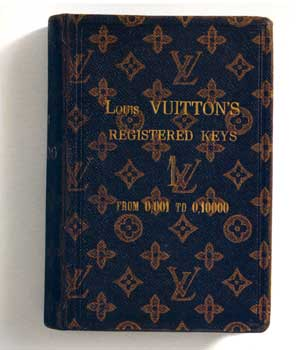
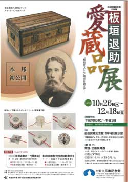
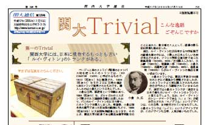

ルイ・ヴィトン・ストーリー 『初めてルイ・ヴィトンを購入した日本人は？』
そのヒントはパリに保管されている販売台帳に記載されていました。 |
ルイ・ヴィトンのトランクの留め金には、安全のために「こじ開けられない」錠が付いています。
複数の羽根を用いた錠の仕組みは特許を得ており、錠には鍵に対応した番号が付いています。
トランクごとの固有の番号は、それぞれの注文、製造、配送を調整する販売台帳に記録されていました。
|
 |
|
ルイ・ヴィトンを購入した日本人の名前も、その販売台帳に記載されていました。 その人の名前は、後藤象二郎。土佐藩士として坂本竜馬と共に活躍し、大政奉還実現の一翼を担った人物で、あの近藤勇とも親交があったことが知られています。 1883年、板垣退助と共にフランスに渡り、パリのルイ・ヴィトンで総革張り・110センチの大型トランクを買い求めたことが記録に残されているのです。このことは、2003年ルイ・ヴィトンの高知店オープンの際の秦郷次郎元社長のスピーチの中で紹介され、初めてルイ・ヴィトンを購入した日本人として多くの人にも知られています。 |
ところが、2011年9月17日の朝日新聞にこんな記事が掲載されました。 |
『ルイ・ヴィトン、板垣退助もご愛用 ひ孫、トランク寄託』
|
| 
|
後藤象二郎と渡欧した際、板垣退助も購入していたのですね。と、なると、どちらが最初なのかわからなくなりましたね。
|
台帳に記載されていた、その他の日本人の名前も調べてみました。 |
西園寺公望 ― 明治維新後伊藤博文らとともに活躍し、内閣総理大臣を務めた人物。
|
| 
関西大学通信（2005年7月15日） |
関西大学の文献の中にこんな文もありました。 |
「ルイ・ヴィトンが所有する19世紀後半の顧客名簿の中には、十数人の日本人らしい名前 が見出されます。フランス特命全権大使であった鮫島尚信（1878年、80年／注文購入した年）、 大山巌（1882年）、後藤象二郎（1883年）、小倉久（1884年）、西園寺公望（1886年、88年）、 岩倉具視（1900年）らがルイ・ヴィトンの製品を買い求めています。」 |
これによると、1878年に購入した鮫島尚信が最初ということに？
|